1. 给mac装个vmware虚拟机
mac 系统安装虚拟机目前有两种主流软件,一种是 Parallels Desktop ,另一种是 vmware.
本教程选用的是 vmware ,因为我之前 windows 上安装的虚拟机软件就是vmware,所以当然选择熟悉的方式鼓捣 mac 虚拟机了啊!
如果你没听说过虚拟机,可能你走错门了,不太适合看这篇教程.如果你执意要了解一下新知识,那我只能用自己浅薄的知识简单介绍下虚拟机的基本概念,一家之言,仅供参考哟!
正常来说,我们当前使用的电脑一般只有一个系统,比如你买的是 mac 笔记本,那么电脑系统就是 mac 操作系统,肯定不会是 windows 操作系统,所以你在 mac 电脑上看不到 windows 的办公软件三件套(word,excel,ppt).
当然你的电脑如果是 联想,戴尔,华硕,神舟 等等品牌的话 ,操作系统一般都是 windows,自然也不会是看到 mac 电脑上的 xcode 软件.
这一点很好理解,每种电脑与生俱来自带特定的操作系统,但是,竟然有一种方法能够突破这层限制!
1.1. 什么是虚拟机
虚拟机（Virtual Machine）指通过软件模拟的具有完整硬件系统功能,运行在一个完全隔离环境中的完整计算机系统.
虚拟机,顾名思义是虚拟的机器.虚拟意味着不是真实的,机器意味着功能像是一台机器. 所以,我们能够理解上述百度百科的定义,虚拟机就是通过软件模拟实现真实机器功能.
软件模拟硬件是手段,实现机器功能是目的,既然如此理论上应该能够模拟任何操作系统,从而实现一台真实的物理机可以有多种不同的操作系统!
这样一来是不是很神奇?一台 mac 可以模拟出 Windows 电脑,也可以模拟出 linux 电脑.
换言之,只要有一台真实的物理机,通过软件我们就可以模拟出任意操作系统,这种软件就是我们接下来要介绍的 vmware .
1.2. 虚拟机的使用场景
作为软件开发者,尽管很多语言支持跨平台运行,但是为了检验真实效果,我们需要运行到不同的环境中,比如windows 和 linux 系统的差异就不是一星半点!
或者为了教程的完整性,需要在各个平台测试运行后才能放心讲解某个知识点,不然别人按照教程发现运行不了,既浪费了别人的时间,又惹得人家不高兴,好心办坏事,大家都不好受.
所以,多个系统是刚需,如果真实环境中能够提供的话,那么自然不需要虚拟机.
只有实际情况下,不能提供真实的多种操作系统的情况下,我们才使用虚拟机技术来模拟不同的操作系统.
1.3. 为什么是 vmware
通过软件模拟实现虚拟机目标,关键在于软件能力如何,所以选择哪一款软件直接决定了我们的虚拟机性能如何.
市面上,这种软件并不是唯一一家,至少目前我了解的就有 vmware ,Parallels Desktop 和 virtualbox .那么为什么选择 vmware 呢?
没有为什么,因为我之前用过 vmware 而已,对于小白的我,并没研究过三者软件有什么区别,哪一种更好,只要操作足够简单,市面上足够流行就可以了.
1.4. 快速体验 vmware
本教程使用的是 mac 电脑,利用虚拟机安装了三种不同系统,分别是 win7旗舰版 , centos7.5 和
Ubuntu18.
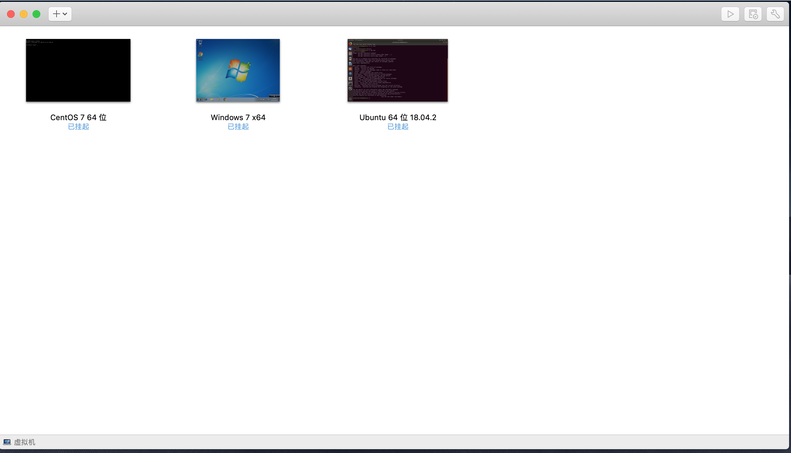
windows虚拟机
启动
windows7 旗舰版虚拟机,并且打开chrome浏览器测试.
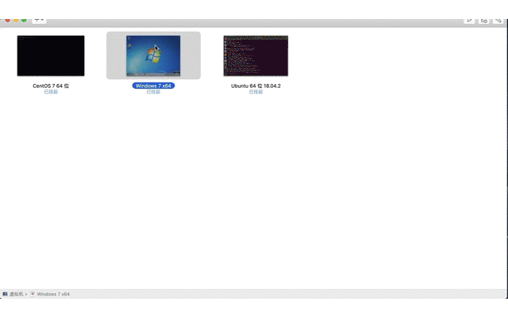
centos虚拟机
启动
centos7.5虚拟机,并且输入pwd命令测试.
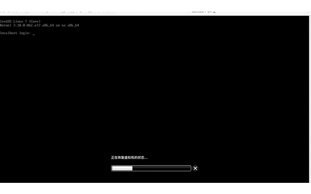
ubuntu虚拟机
启动
ubuntu18虚拟机,并且输入pwd命令测试.
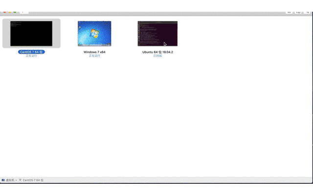
1.5. 如何安装 vmware
需要实现准备好下载工具以及留下足够的内存空间,因为虚拟机和镜像毕竟都挺大,下载挺费时间,安装也比较占内存,毕竟是完整的虚拟机.
1.5.1. 下载软件以及序列号生成工具
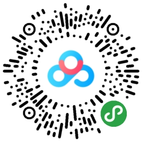
链接: https://pan.baidu.com/s/1D0LL_muZ_YEbmgS4A6l3pw 提取码: ti8v 复制这段内容后打开百度网盘手机App，操作更方便哦
VMware-Fusion-11.0.3-12992109.dmg[必选] 安装软件
vmware软件是收费软件,有一段时间的试用期,这里采用序列号激活方式,有条件的话,建议支持下正版.
KeyMaker.app[可选] 序列号生成工具
如果是选择官网试用版或者已购买正版,自然不需要序列号生成功能.
1.5.2. 安装 VMware-Fusion 软件
双击安装 VMware-Fusion-11.0.3-12992109.dmg 软件,接下来一路允许按照提示操作即可.
双击安装,因为软件源不是从 App Store 下载的,所以苹果默认策略不允许安装第三方来源.
既然询问是否打开软件,当然打开,不然怎么安装呢?
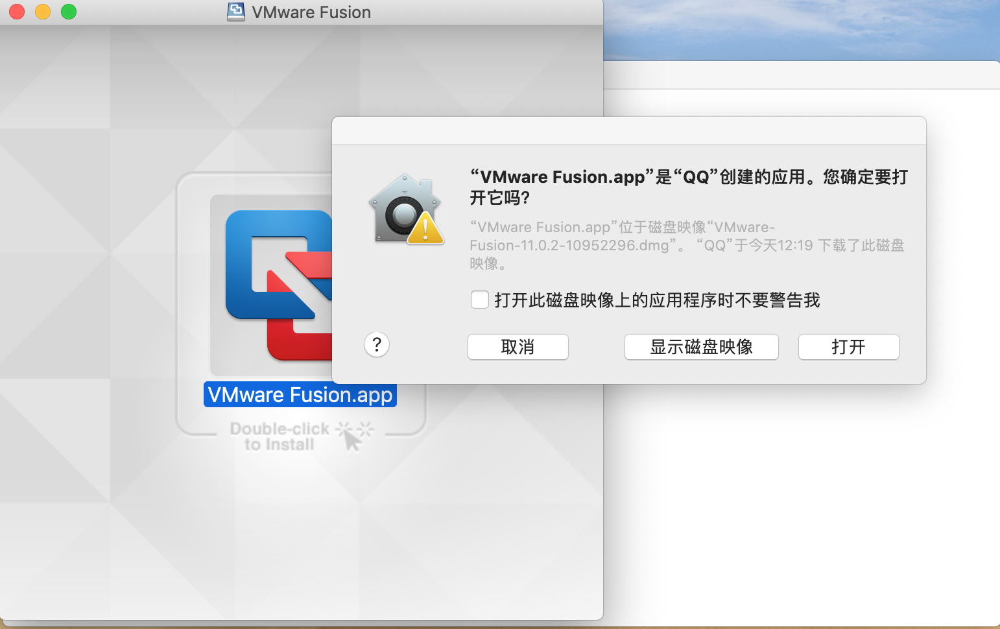
然而,还是太年轻,尽管刚才已经选择打开软件,然而苹果怕是担心我们不小心安装了有害应用吧?还是需要再问我们一遍,你确定要安装吗?我确定!我怎么知道是你本人?你输入管理员密码试试,密码正确我就让你安装.
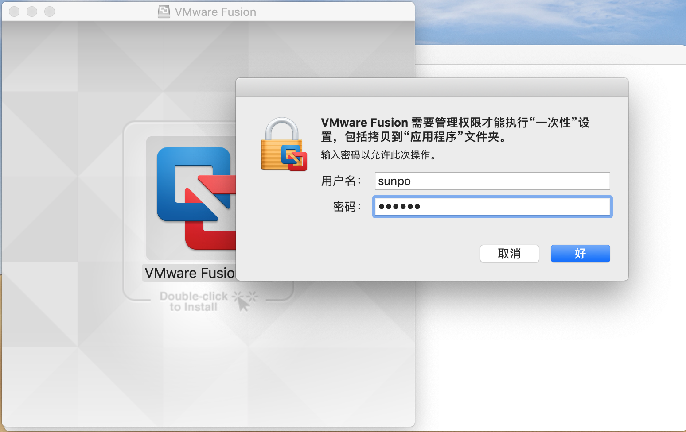
千呼万呼使出来,你终于相信我是我了,安装进行中...
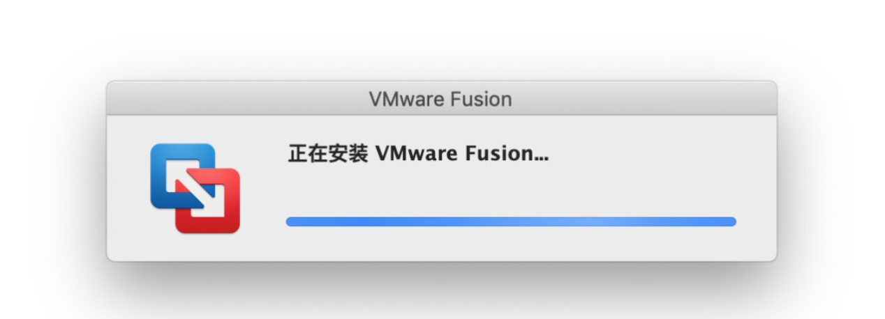
安装到一定程度时,会让我们输入产品密钥进行激活,否则只能试用30天,到期会再次提醒输入密钥,接下来我们来获取序列号.
1.5.3. 打开 KeyMaker 软件
双击运行 KeyMaker.app ,弹出一系列序列号,随意选择某一行的序列号复制到上一步安装VMware-Fusion 的产品密钥并验证.
Some good serial numbers..
KGLWE-VA5KZ-D1QHT-2R51Q-ZKQVV
VTZMD-ZYTKX-D1ZCR-C6QCZ-QZZEV
GQZX9-ZFX3T-Z1Z6Y-AFPCW-ZZ5GZ
THQQR-00TZQ-81L0R-10LEG-G2ZTZ
P1VXR-GFNGC-R1JJR-JXG3T-PQ7XT
ZXYXY-VMTKZ-Y1YCX-7MQ9X-MQQ6V
Here another one
GK9QC-9KEM4-V1VAQ-P8JEP-MK77V
Greets to Corby
随便复制一个序列号,继续正常安装.
输入产品密钥后基本上就是 vmware 用户,除非你不同意它的产品协议,当然同意了!
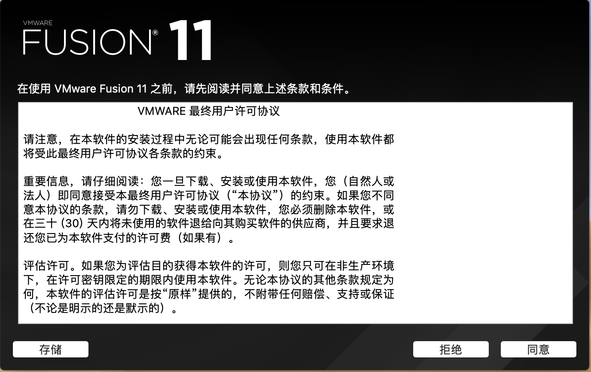
本以为安装到此结束,没想到还想要获取辅助功能权限,没办法,既然你想要,那我就给你啊,保不齐缺胳膊少腿的.
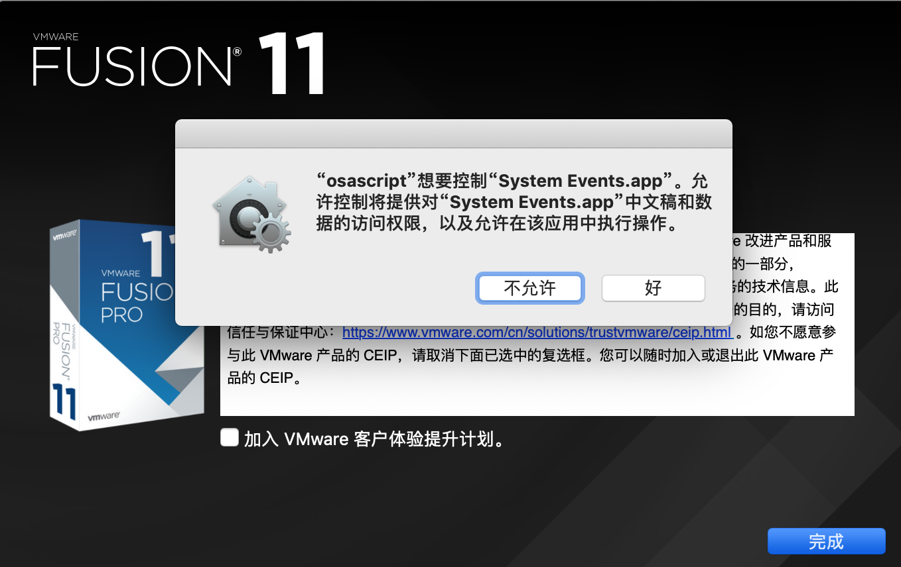
和安装相同,不是你选择允许苹果就允许,仍然需要你提供管理员密码以此确保主观操作意愿.
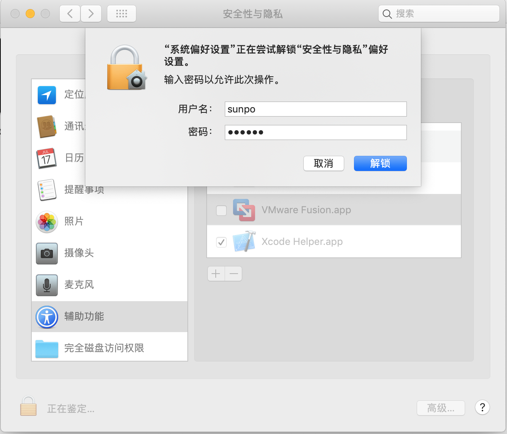
授予辅助功能权限,并再次锁定该项操作,可以与想的是,以后有应用想要申请辅助功能,必须经过管理员同意才可以,为了安全需要这么多步骤,好吧.

我只想安安静静使用 vmware 产品,不希望使用数据被上传收集,当然也有点小担心,毕竟也不是正儿八经的用户,所以才不加入体验计划呢!
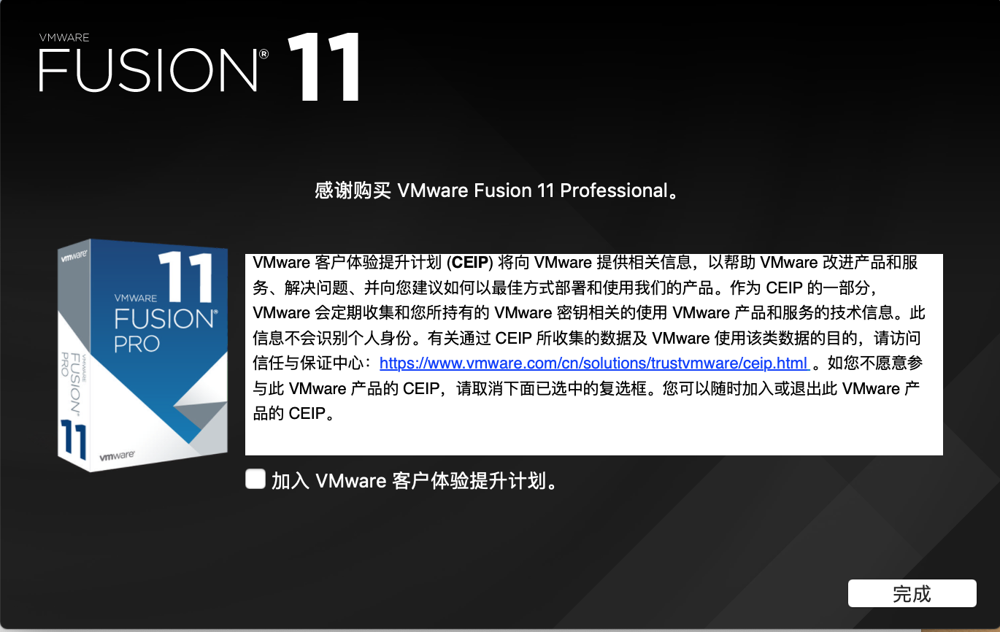
1.5.4. 验证 vmware 软件
在访达或启动台中找到 VMware-Fusion 软件单击启动,测试能否正常运行软件.
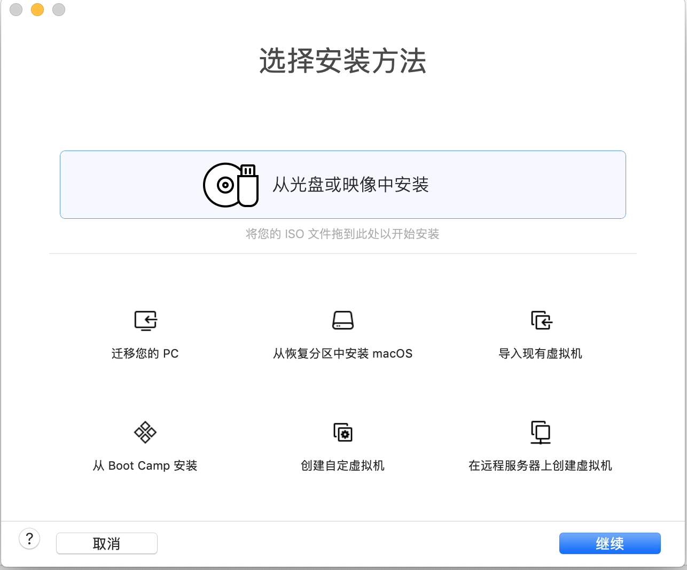
1.6. 小结
本节主要介绍了什么是虚拟机,虚拟机的使用场景以及如何安装虚拟机,下一节我们将介绍如何给虚拟机加点料,让虚拟机派上练武之地!